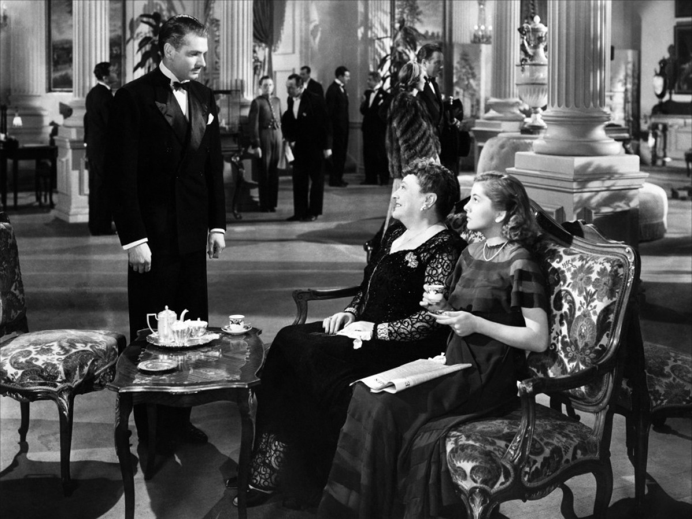
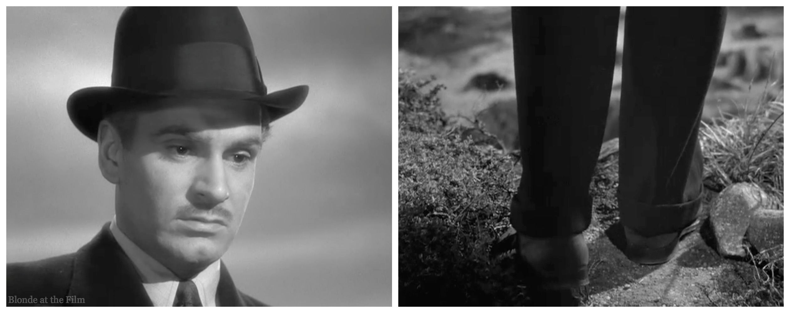
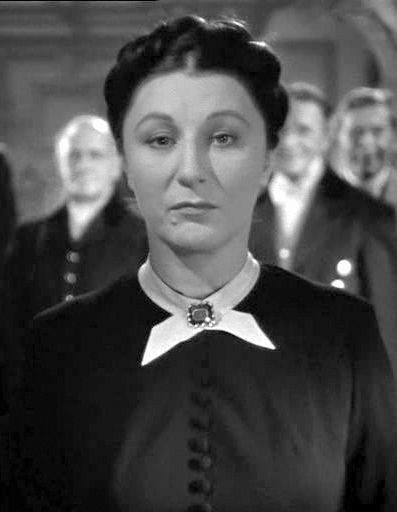
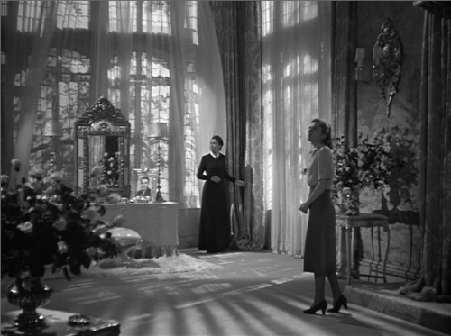
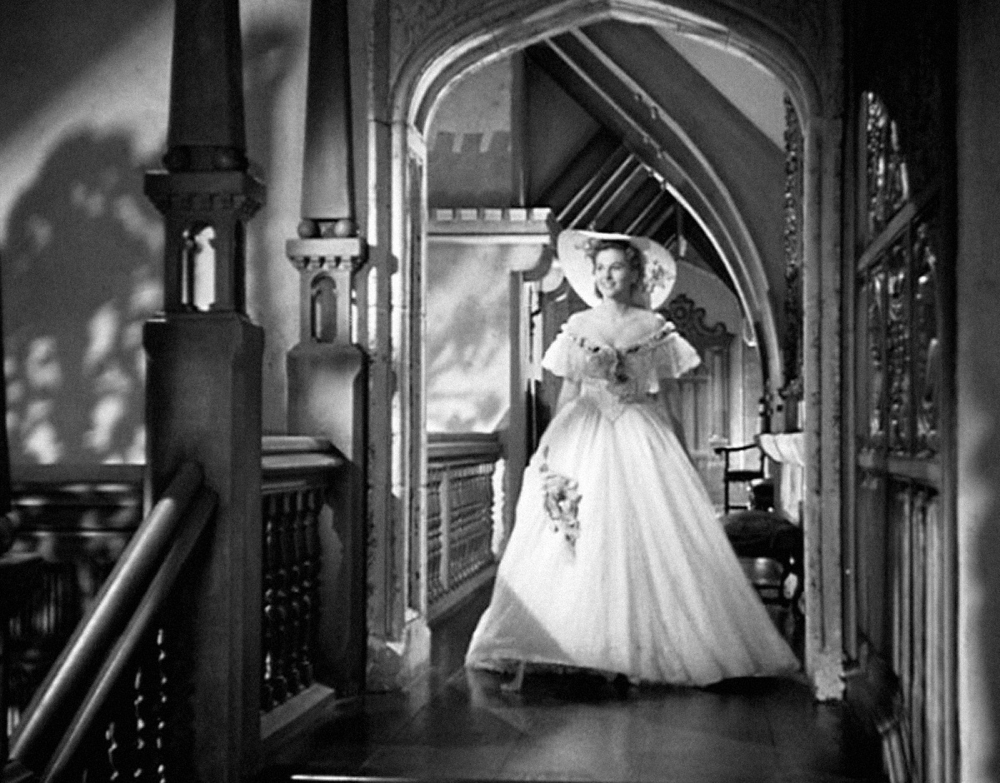
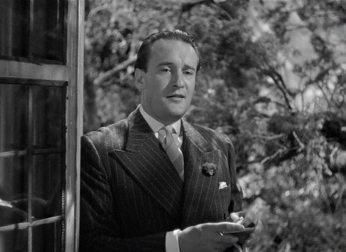
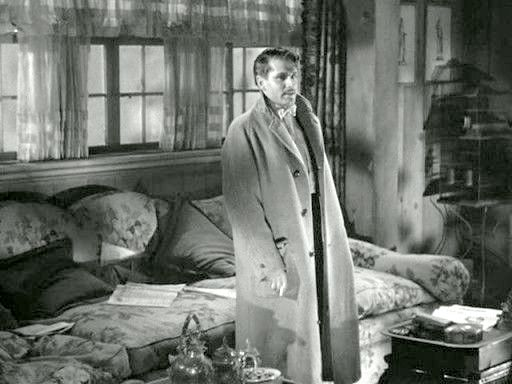

By Lucia Adams
“Last night I dreamt I went to Manderley again.”
In 1938 with war looming and British film in crisis, Alfred Hitchcock signed on with David O. Selznick of United Artists, moved to Hollywood and his first American film Rebecca appeared in 1940. The only Hitchcock film to win an Oscar for Best Picture, it transformed Daphne du Maurier’s mystery novel into a film noir psychodrama, a poisonous soup bubbling with repressed memories,, psychoses, neuroses, sadism and masochism.
Selznick, busy with GWTW, left the filming in Hitchcock’s hands but before release made some nervous cuts, shooting and re-shooting scenes. It was too late and the censors missed the boat carrying an effete aristocrat, a lesbian housekeeper, more mean old women, and a criminal who psychologically torture a nameless fair-haired victim. Hitchcock told Truffaut the heroine was Cinderella.

She who never gets a first name is the paid companion of a vile American woman in Monte Carlo who treats her like a slave. Taking a break from servitude, she interrupts the imminent suicide of a handsome stranger about to jump into the Mediterranean. Within 24 hours George Fortescue Maximilian de Winter proposes marriage in a fairy tale setting.

What can he, the dashing suave Laurence Olivier, possibly see in Joan Fontaine, a grey mouse of a girl 20 years his junior? An innocent lost child with an Oedipus complex, an orphan whose father has just died, happy to embrace a substitute who demeans her barking, blow your nose, dry your eyes, stop biting your nails, it’s a pity you have to grow up, you can’t be too careful with children. Somewhere between incest and misogyny!!

Maxim’s wife Rebecca drowned a year before and he appears consumed with grief while the new Mrs. de Winter flinches, continually startled with wrought face and darting eyes palpably fearing she is inadequate to run Manderley, a 19th century Gothic pile on the Cornish coast. Enter Mrs. Danvers, Judith Anderson’s frowning, frightening housekeeper, pinch faced, all in black, black eyes, black hair, black silhouette.

The psychological heart of the film is her obsessive love for the dead Rebecca whom she tended since childhood, not du Maurier’s motherly servant but a much younger “Danny” never missing an opportunity to mentally torture the new wife, “He doesn’t love you. He wants to be alone with her.” Because Maxim is so melancholy the new Mrs. de Winter assumes he is mourning the death of the glamorous Rebecca when his supercilious sister Beatrice gives her the once over, “you don’t care a hoot how you look”.

The first half of the film is sinister and unnerving the audience tensely sharing the heroine’s terror of the shadow always trailing her around the moody mansion. Soon, as if in a trance Danvers leads her into Rebecca’s boudoir, where after she buries her face in a soft chinchilla coat in ecstasy, erotically displaying the beautiful dead inhabitant’s lacey underwear, lifting up from the bed a flimsy sheer black nightgown “look you can see my hand through it”. She places the new bride’s face on the fur and in pantomime brushes her blond hair as she did Rebecca’s black hair but it falls on innocent eyes and ears. No dice.
According to The Code depiction or direct reference to homosexuality was forbidden, the sanctity of the institution of marriage and the home must be upheld, and films should not infer that “low forms” of sexual relationships were acceptable. (How one wonders did Hitchcock’s gay women here in and The Birds or Notorious go unnoticed?)
The second half of the film solves the mystery of Maxim’s brooding for it turns out Rebecca was as corrupt as Dorian Gray, with a canker in the heart of a rose whose perverse acts he will never reveal to any living soul, his repression having been transformed into deep neurosis. Then his bride finally balks, “I am Mrs. de Winter now!!” ordering Danvers to destroy Rebecca’s letters. The film is no longer jealousy, it’s revenge.

For a masquerade ball in Manderley Danvers suggests she wear a white dress copied from an old ancestral portrait, shades of Vertigo, identical to Rebecca’s costume a year before. When she approaches silently behind him, Maxim suddenly turns and in horror explodes, uncoiling his tight knot of misery. He orders the “little fool” to take it off and she starts to unravel haunted now by the ghost of Rebecca, actually Danvers who urges her to glide into seductive death by jumping out the window into the sea.
Saved by fireworks exploding in the sky as sensuously evocative as Grace Kelly awaiting Cary Grant on the Riviera in To Catch a Thief, (thank goodness Hitchcock would discover his true genius was color). Rebecca’s sunken tomb floats ashore and rushing to a stunned Maxim the heroine cries he can never love her the way he did Rebecca but even so they can still be friends and carry on which some critics surmise meant sex was not an important part of the relationship, Maxim impotent if not gay (rather a stretch).

“Love her? I hated her”. Rebecca had really died in her secret cottage, the boat just a ruse, taunting him to kill her for being pregnant by her first cousin Jack Favell, the delicious caddish blackmailer George Sanders, who calls the heroine Cinderella. In the book Maxim shoots Rebecca through the heart but in the film because the Code required murderous spouses to pay the price, she accidentally kills herself by falling and hitting her head on fishing tackle. Maxim can thus be exonerated in the accidental death.

And the MacGuffin—Rebecca lied to the end. She was not be pregnant due to uterine cancer but wanted to commit suicide in a way to frame Maxim for murder. When Danvers learns she was not party to these confidences, betrayed by Rebecca she burns Manderley to a crisp. In the book the fire was to prevent the new Mrs. de Winter from living there but in the film it was the blackest revenge of the evil stepmother on her own Rebecca.
Rebecca’s form and content influenced many of Hitchcock’s subsequent films, psychoanalysis boldly appearing as the main plot line five years later in Spellbound. One of the first Hollywood films to feature psychoanalysis it reflected Hitchcock’s infatuation with the pseudoscience since discovering Freud in 1926 — though perhaps he was exploring his own convoluted subconscious. The recent autobiography of Tippi Hedren reveals he was a regular Harvey Weinstein threatening to ruin her career if she didn’t come across with the goods, taking revenge at her rebuttal by staging the “brutal ugly relentless” bird attack (with real birds not mechanical ones at the last minute) which injured her. Still she went on to play the mentally ill Marnie a thief who’d been abused as a child.